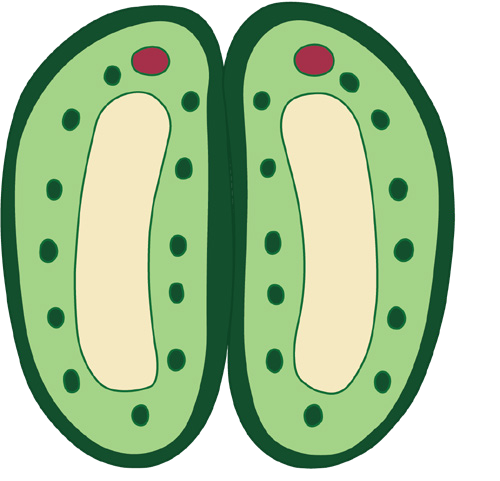
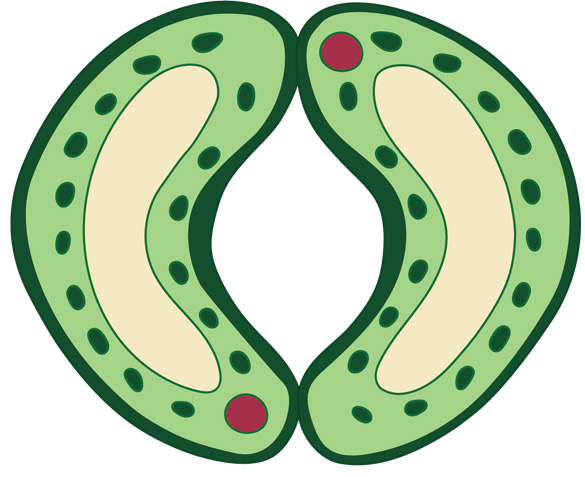
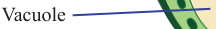

139
Student’s Book - Form Two

Biology for Secondary Schools
Oxygen diffuses into the plant cells while carbon dioxide diffuses out into the intercellular spaces and eventually into the atmosphere through the partially opened stomata.
Gas exchange through the lenticels
Lenticels are made up of loosely packed cork cells located on some parts of the bark of woody stems and roots, as shown in Figure 6.10. These loosely arranged cells create many small pores through which gas exchange occurs.
The air spaces between the cells are called intercellular air spaces.
Carbon dioxide and oxygen diffuse in opposite directions, depending on their concentration-gradients. Carbon dioxide diffuses into neighbouring cells until it reaches the site of photosynthesis. Oxygen moves out through the open stomata to the atmosphere.
At night, there is no sunlight. Therefore, light reaction of photosynthesis ceases.
This means that little or no glucose is produced hence the guard cells do not absorb water by osmosis. Therefore, the stomata remain partially closed. On the other hand, respiration continues during the night. The partially open stomata allow in a small amount of air to accumulate in the air spaces.
The guard cells become turgid, and the stomata open as Figure 6.9 (b) shows.
Air from the atmosphere enters into the air spaces in the spongy mesophyll. The cells next to the air spaces have more oxygen that is produced by the cells during photosynthesis and less carbon dioxide as it is used up during photosynthesis.


Nucleus
Chloroplast
Vacuole
Cell wall
Guard cells
Stoma
(a) Closed stoma
(b) Opened stoma

Figure 6.9: Structure of a stoma
08/04/2026 10:18:36